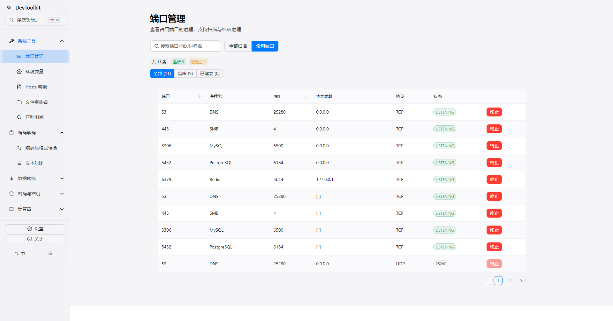
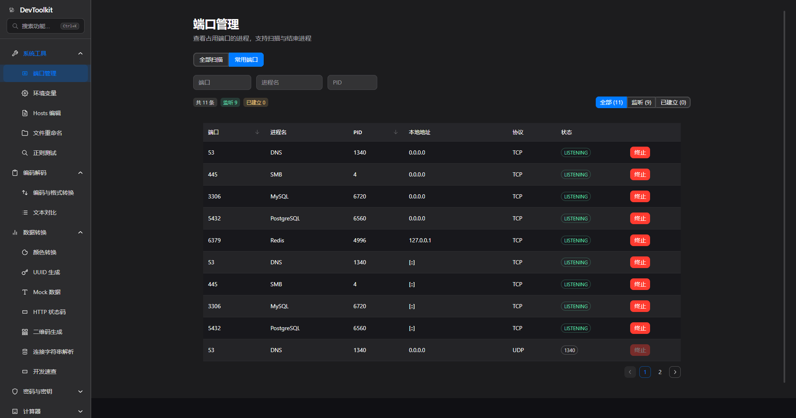
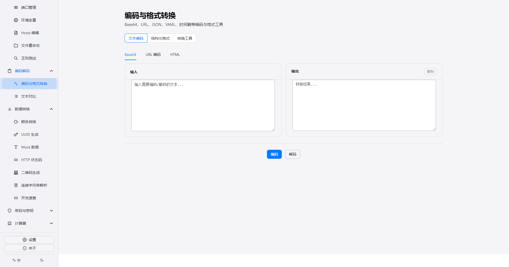
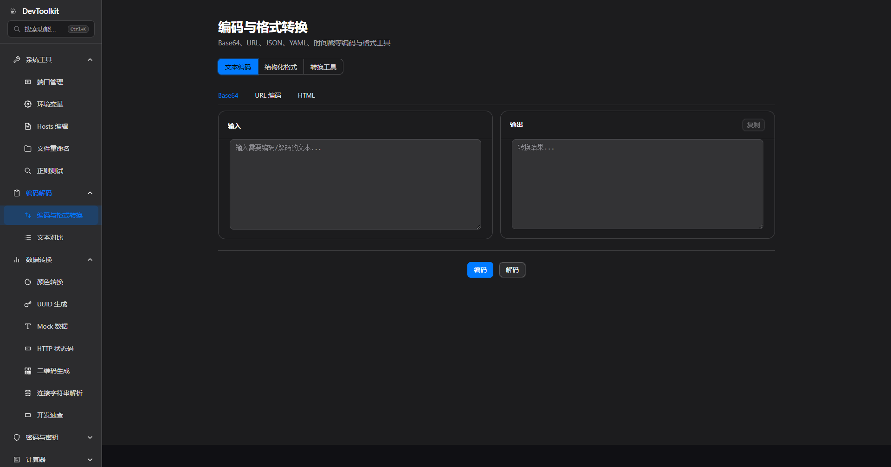
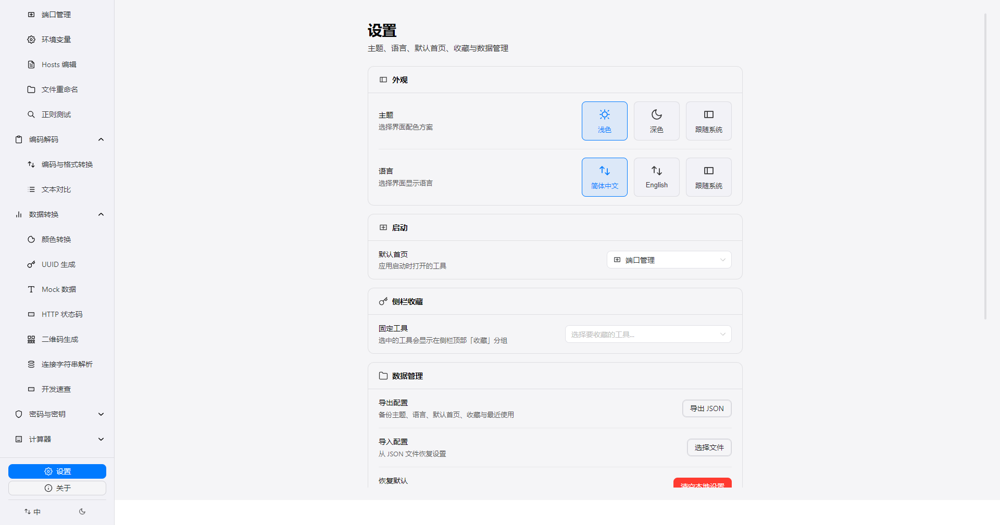
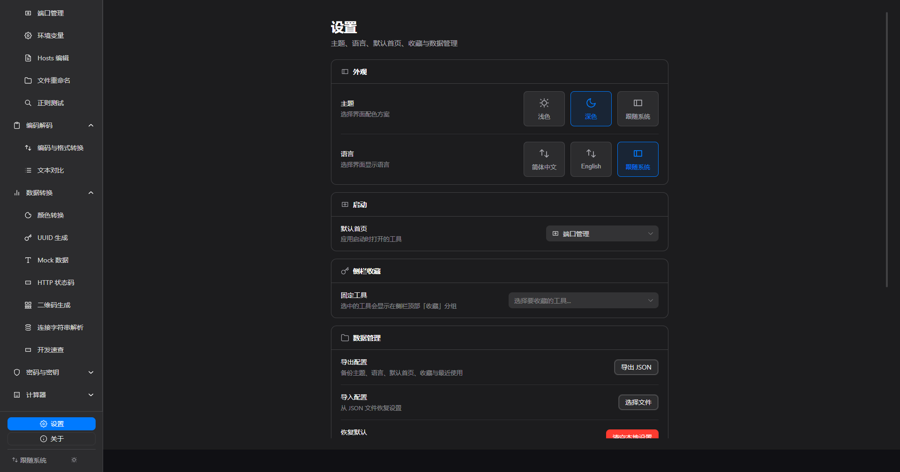

涵盖系统管理、编码解码、数据转换、密码密钥与计算器五大类，共 19 个工具，每个工具专注做好一件事
管理本地系统环境，端口扫描、环境变量、Hosts 编辑一站搞定
编码格式转换与文本对比，JSON 树形视图、Schema 校验，XML/SQL 格式化
生成器与速查工具，Mock 数据、状态码、二维码等开发调试高频场景
密码、JWT、哈希与证书解析，全部本地计算，数据不出设备
Cron 可视化编辑、IPv4/IPv6 子网与 Chmod 权限换算
参考 Apple 设计规范，每一个界面都追求直觉与美感。以下为 3 张代表性截图；上方功能概览已列出全部 19 个工具。


端口管理

编码与格式转换

设置每个工具页面专注做好一件事，通过搜索与聚合入口避免重复，侧栏保持清晰。
所有功能完全在本地运行，无需网络连接。你的数据始终在你的设备上，隐私安全有保障。
参考 Apple Human Interface Guidelines，追求简洁的界面、流畅的动画、直觉的操作。
完整的中英双语支持，应用内无缝切换语言，面向全球开发者。
克隆仓库并安装依赖，即可启动开发服务器
git clone https://github.com/blueWhalei/dev-tool-kit && cd dev-tool-kit && pnpm install && pnpm dev